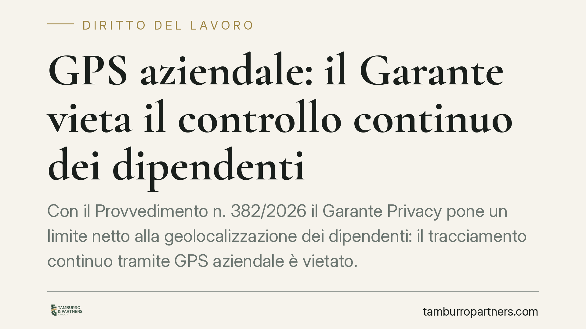

GPS aziendale: il Garante vieta il controllo continuo dei dipendenti
Con il Provvedimento n. 382/2026 il Garante Privacy pone un limite netto alla geolocalizzazione dei dipendenti: il tracciamento continuo tramite GPS aziendale è vietato. I dati raccolti da sistemi non conformi non possono fondare provvedimenti disciplinari, e l'adeguamento tardivo riduce ma non cancella le sanzioni. Un tema che tocca ogni azienda con flotte, tecnici o personale in mobilità.

Il fatto
Il Garante per la protezione dei dati personali, con il Provvedimento n. 382/2026, è intervenuto sull'uso dei sistemi di geolocalizzazione satellitare installati sui veicoli aziendali. Il caso riguardava una struttura sanitaria che monitorava in modo continuativo gli spostamenti dei propri dipendenti tramite GPS.
La decisione è chiara: il controllo costante e senza soluzione di continuità della posizione dei lavoratori è illegittimo. Il tracciamento è ammesso solo entro i confini stretti della necessità organizzativa e produttiva, non come strumento di sorveglianza generalizzata.
Inquadramento normativo
Due sono i pilastri su cui poggia il provvedimento.
Sul piano della protezione dei dati, il GDPR impone i principi di minimizzazione (si trattano solo i dati strettamente indispensabili), proporzionalità (il mezzo deve essere adeguato allo scopo) e limitazione delle finalità (i dati raccolti per un fine non possono essere riutilizzati per altri). Un GPS che registra la posizione in modo continuo raccoglie molto più di quanto serva a gestire una flotta o pianificare interventi: viola quindi la minimizzazione.
Sul piano giuslavoristico entra in gioco l'articolo 4 dello Statuto dei Lavoratori. Gli strumenti da cui deriva anche solo la possibilità di un controllo a distanza dell'attività sono ammessi solo per esigenze organizzative, produttive, di sicurezza del lavoro o di tutela del patrimonio aziendale, e richiedono accordo sindacale o autorizzazione dell'Ispettorato. Anche quando l'installazione è legittima, l'uso dei dati resta soggetto ai limiti di finalità e alla previa informazione ai lavoratori.
Implicazioni pratiche
Il punto più delicato per i datori di lavoro riguarda l'inutilizzabilità dei dati. Se il sistema GPS non rispetta i principi di minimizzazione e proporzionalità, le informazioni raccolte non possono essere usate per contestare addebiti né per irrogare sanzioni disciplinari. Un licenziamento o una sospensione fondati su quei dati sono esposti a un elevato rischio di annullamento.
Non si tratta quindi di un problema meramente formale. Un impianto di geolocalizzazione mal configurato produce un doppio danno: la sanzione del Garante e la perdita di efficacia probatoria dei dati nelle controversie di lavoro.
Il provvedimento chiarisce anche il valore dell'adeguamento tardivo. Correggere il sistema dopo la contestazione è un elemento che il Garante valuta positivamente in sede sanzionatoria, ma non azzera la responsabilità: la sanzione viene ridotta, non eliminata. La conformità va costruita prima, non dopo l'accertamento.
Cosa fare in concreto
- Verificate la configurazione dei sistemi GPS: disattivate il tracciamento continuo e impostate la rilevazione della posizione solo quando è funzionale a un'esigenza operativa concreta (es. assegnazione di un intervento, gestione di un'emergenza).
- Ricostruite la base giuridica: controllate di avere accordo sindacale o autorizzazione dell'Ispettorato del lavoro ai sensi dell'art. 4 Statuto, e verificate che le finalità dichiarate corrispondano all'uso effettivo.
- Aggiornate informativa e policy: i lavoratori devono sapere in modo chiaro quali dati sono raccolti, quando, per quanto tempo e con quali finalità. Prevedete tempi di conservazione limitati e cancellazione automatica.
- Non usate a fini disciplinari dati da sistemi non conformi: prima di ogni contestazione basata sulla geolocalizzazione, verificate la legittimità del sistema che li ha prodotti.
- Documentate l'adeguamento: se il sistema va corretto, tenete traccia scritta degli interventi e delle date. In caso di accertamento, la prova della tempestività dell'intervento incide sulla misura della sanzione.
Consigliamo di sottoporre a revisione periodica ogni strumento che possa comportare un controllo a distanza dei lavoratori, integrando la valutazione privacy con quella giuslavoristica. Le due discipline si intrecciano, e un sistema legittimo sotto un profilo può risultare illegittimo sotto l'altro.
Disclaimer
Contributo informativo a cura di Tamburro & Partners - Avv. Giuseppe Tamburro. Non costituisce parere legale.
Ogni storia di lavoro ha i suoi tempi.
Se gestisci HR e vuoi un confronto su contenzioso, ispezioni o licenziamenti, scrivi allo studio. Ti rispondiamo entro un giorno lavorativo.